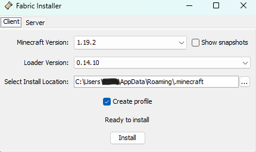
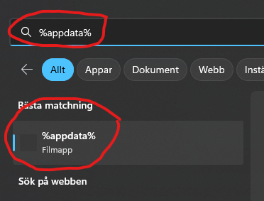
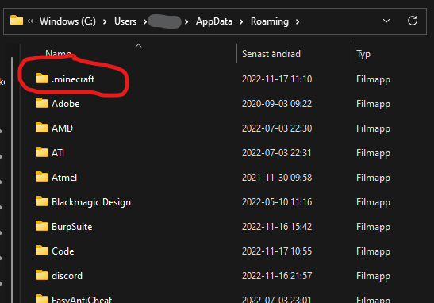
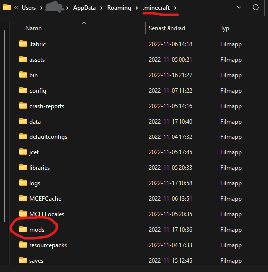
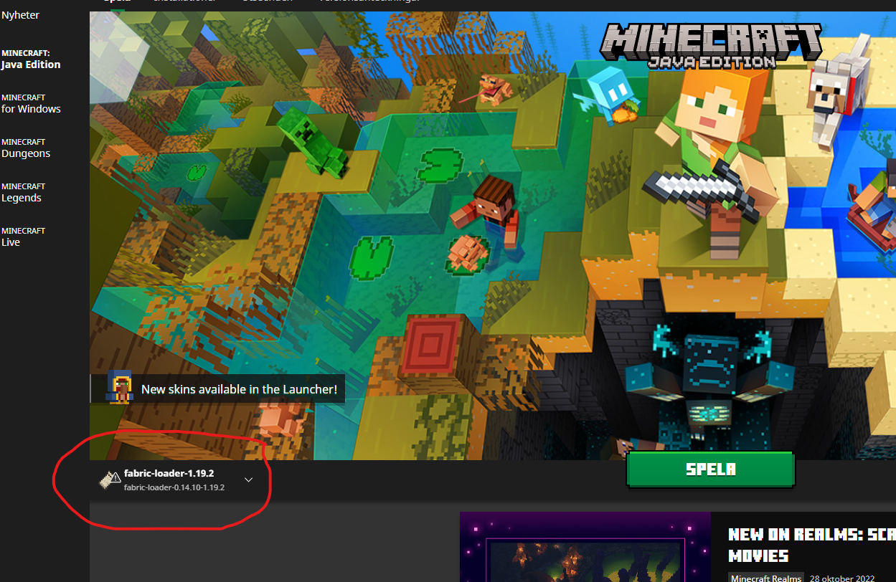
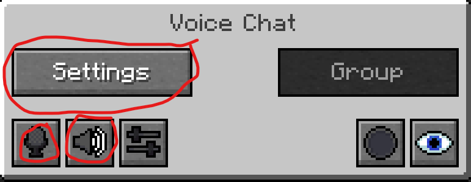
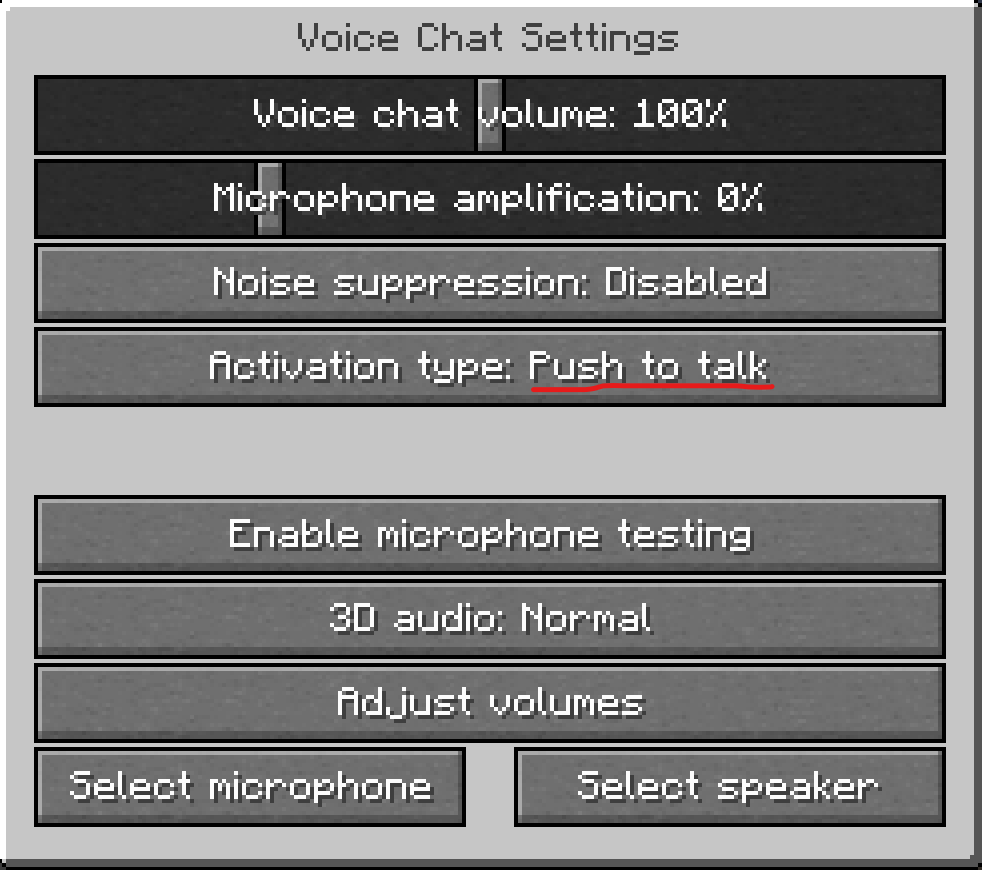
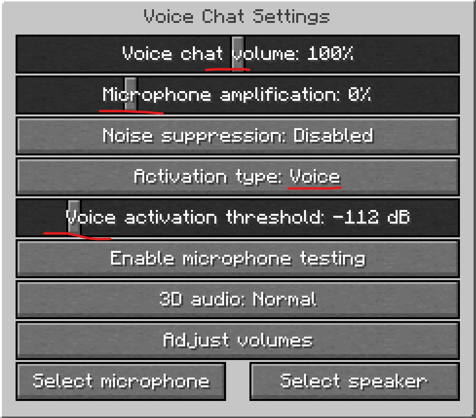

Innan vi går igenom hur du installerar modifikationerna för att kunna uppleva den virtuella musikhjälpen fullt ut vill vi att du säkertställer att du har en fungerande version av Minecraft java edition installerat på din dator. Vilken version du spelat på innan spelar ingen roll, bara att du startat spelat innan.
Vi vill också förtydliga att du kan delta i den virtuella Musikhälpen-upplevelsen utan att göra följande steg, utan att använda mods. Då kommer du dock inte kunna se Live-streamen från buren på den stora skärmen eller röstchatta med någon av de andra deltagarna/besökarna. Om du inte vill installera några mods kan du hoppa direkt till "Anslut till Servern" längre ned på sidan.
Instruktionerna nedan kan se långa ut, men de är skrivna så att alla, även helt fräscha nybörjare, ska kunna förstå och följa alla steg utan att förhoppningsvis fastna.
Första steget är att ladda ner följande zip-fil:
Ladda ner zipNotera att när " används nedan så är det för att markera nyckelord, dessa skall aldrig inkluderas när du letar eller söker efter fält, mappar eller filer.
I zippen hittar du de två olika installationerna som behöver göras. Börja med att dubbelklicka på "fabric-installer" och se till att "client" är valt uppe i vänstra hörnet, INTE "server". I "Minecraft Version" väljer du "1.19.2" och i "Loader Version" väljer du senaste tillgängliga, eller förslagsvis "0.14.10". Dessa bör vara ifyllda redan, annars leta upp dom i listorna själv. Klicka sedan "Install" längst ned i fönstret och låt den arbeta färdigt. Klicka på "Ok". 
Nästa steg är att lägga till modfilerna i minecraft. Detta görs enklast genom att klicka på windows-knappen på tangenbordet längst ned till vänster. I sökrutan skriver du "%appdata%" och enter. Du bör få upp ett nytt fönster med utforskaren.  Relativt högt upp i listan av mappar och filer bör du se en mapp som heter ".minecraft". Dubbelklicka på den. Om du inuti denna mapp har en mapp som heter "mods" ska du dra över innehållet från "mods"-mappen inuti zippen till denna mapp. Har du ingen "mods" i ".minecraft" kan dra över hela "mods"-mappen från zippen till ".minecraft".  
Nu har du installerat allt som krävs. Nu när du startar upp minecraft och kommer in launchern bör du se längst ned till vänster något i stil med "fabric-loader-1.19.2". Om inte, klicka på pilen bredvid minecraft-versionen och leta upp versionen skriven ovan. Om du inte hittar någon version med "fabric" i namnet bör du läsa igenom installations-instruktionerna en gång till och se om du missat något steg. 
När du har startat Minecraft 1.19.2 (med eller utan mods) ansluter du genom att gå in på "Multiplayer", klicka på "Add Server" och under "Server Address" mata in "mh.aroundthecorner.se". Klicka på "done" och du bör sedan kunna se servern i listan och hur många användare som just nu är inne. Dubbelklicka på servern i listan och om allt gått korrekt bör du komma in till Kungstorget i Göteborg och känna kärleken flöda.
Inuti spelet finns framförallt två stycken knappar att hålla koll på. Med "R" kan du ändra inställningar för streamen. Dra i slidern för att justera volymen av streamen och du tycker steamen är laggig kan det hjälpa att ändra upplösning med "Resolution" längst ned i menyn.
Andra knappen att känna till är "V". "V" öppnar menyn för voice chat och dess inställningar. Första menyn tillåter dig att tysta alla andra spelare med hjälp av hörlursknappen. Mikrofonknappen stänger av din mikrofon så att andra inte hör dig.
"Settings" tar dig vidare till nästa skärm. SUPERVIKTIGT är att voicechat är inställt på "Push to Talk" som standard. Klicka på den för att ändra till att du alltid hörs.

Fungerar inte Musikhjälpen-streamen? Dubbelkolla att du följt instruktionerna för installationen korrekt.
Har andra användare problem att höra dig? Dubbelkolla att din mikrofon inte är avstängd (enligt tidigare instruktion). Är din röst svag eller "hackig" för andra spelare? Testa att höja "microphone gain" och sänka "Voice activation threshold"
